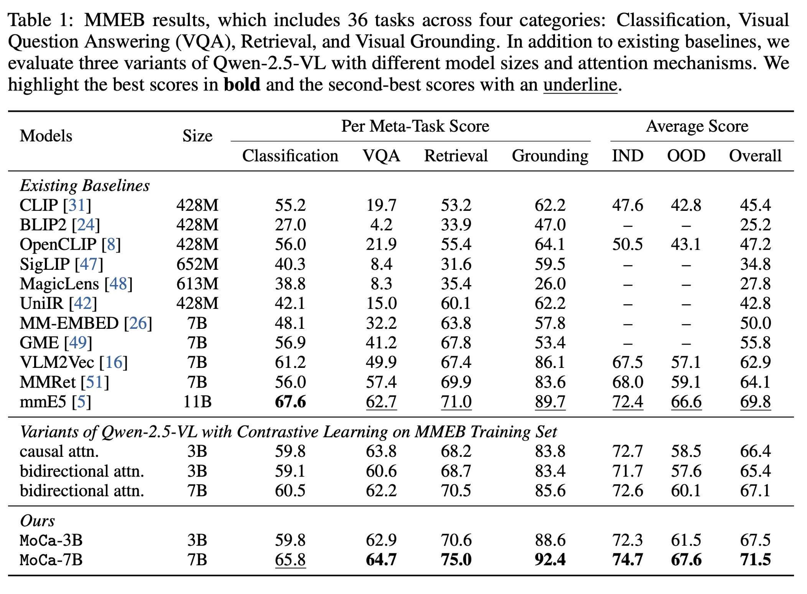

Multimodal embedding models, built upon causal Vision Language Models (VLMs), have shown promise in various tasks. However, current approaches face three key limitations: the use of causal attention in VLM backbones is suboptimal for embedding tasks; limited diversity in training objectives and data; and scalability issues due to reliance on high-quality labeled paired data for contrastive learning. To address these, we propose MoCa, a two-stage framework for transforming pre-trained VLMs into effective bidirectional multimodal embedding models. The first stage, Modality-aware Continual Pre-training, introduces a joint reconstruction objective that simultaneously denoises interleaved text and image inputs, enhancing bidirectional, context-aware reasoning. The second stage, Heterogeneous Contrastive Fine-tuning, leverages diverse, semantically rich multimodal data beyond simple image-caption pairs to enhance generalization and alignment. Our method resolves the stated limitations by introducing bidirectional attention via continual pre-training, employing diverse multimodal data for enhanced representation robustness, and scaling effectively with massive unlabeled datasets through joint reconstruction objectives. Experiments demonstrate that MoCa consistently improves performance across MMEB and ViDoRe-v2 benchmarks, achieving new state-of-the-art results, and exhibits strong scalability with both model size and training data.
Starting from pre-trained VLMs, our approach consists of two stages:
We present the general multimodal embedding performances on MMEB and the long-form document-level retrieval performances. MoCa surpasses all strong baselines on both benchmarks, demonstrating the effectiveness of our training pipeline in improving multimodal embedding quality.
Below are the results on the MMEB benchmark, which includes 36 tasks across four categories: Classification, Visual Question Answering (VQA), Retrieval, and Visual Grounding. In addition to existing baselines, we train three variants of Qwen-2.5-VL with different model sizes and attention types. We highlight the best scores in bold and the second-best scores with an underline.
Below are the results on the ViDoRe-v2 benchmark, which includes 7 tasks. "Syn" is short for synthetic, "Mul" is short for multilingual, and "Bio" is short for Biomedical. We highlight the best scores in bold and the second-best scores with an underline.
Several key findings emerge from the results:
To understand the contribution of each major design choice in our framework, we conduct ablation studies on both the Modality-aware Continual Pre-training and Heterogeneous Contrastive Fine-tuning stages. As shown in in the following table, removing any key component leads to a consistent performance drop on both benchmarks (MMEB and Vidore-v2), demonstrating the importance of each part.
Modality-aware Continual Pre-training. The ablation of either the Masked Language Modeling (MLM) or the Masked Autoencoding (MAE) objective results in a performance decline, indicating that both text and image reconstruction are essential for learning modality-specific representations. Disabling both yields the largest decline, demonstrating the joint effectiveness between MLM and MAE in training a robust bidirectional encoder.
Heterogeneous Contrastive Fine-tuning. We then evaluate the effect of different types of training data used during contrastive fine-tuning. Removing text-only pairs results in a noticeable drop, showing their importance for maintaining strong language representations. Excluding long-form document retrieval pairs (VisRAG and the training set of ColPali) also hurts performance, especially on ViDoRe, demonstrating their value in supporting deeper reasoning over extended contexts. Finally, removing the task-aware batching technique, where data from different tasks are jointly trained in each batch, leads to performance degradation. This technique helps prevent the model from overfitting to task-specific patterns and encourages it to learn more sample-discriminative representations, which is crucial for generalization across diverse task formats.
To assess how the data scale of CPT affects the quality of the learned embeddings, we investigate the scaling effect of our framework. We conduct contrastive fine-tuning (CL) using checkpoints saved at different steps during a single CPT run for both 3B and 7B models.
As shown in the figure, the downstream performance on MMEB steadily improves as the number of CPT steps increases. This demonstrates that modality-aware pre-training helps the model develop stronger bidirectional representations, which are then more effectively aligned during contrastive fine-tuning. The results demonstrate that CPT provides a progressively better initialization for CL, leading to more robust and transferable multimodal embeddings.
@article{chen2025moca,
title={MoCa: Multimodal Contrastive Learning for Visual and Language Understanding},
author={},
journal={},
year={2025}
}